葛美林
L. Leopold Gmelin（1788—1853）
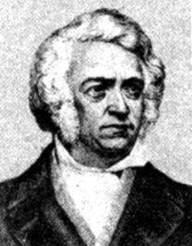
亦译“格麦林”，德国化学家。1788年8月2日生于格丁根，1853年4月13日卒于海德堡。曾求学于蒂宾根和格丁根，学习化学和医学，1812年获得医学博士学位。1814年他在海德堡大学任讲师，1817—1851年任教授。葛美林主要从事有机化学和无机化学方面的研究。1822年发现铁氰化钾，1824年发现牛磺酸。1826年与F. 蒂德曼合作，发现了正铁血红素和胰酶。1848年首先采用酯和酮等名称。
其主要贡献是1813年创编多卷本《理论化学手册》巨著。此书内容丰富，收集了化学领域中广泛的问题，引用了恰当的事实，按元素和化合物分类，将化合物分为有机物和无机物；并附有合适的参考书目。由于此书是重要的化学工具书，所以后人继续了这项有意义的工作，增添了新的内容，多次再版和改名。1924年开始出版第8版。为了纪念此书的创始人，将书名改为《葛美林无机化学手册》。
肖莱马
（Carl Schorlemmer，1834—1892）
德国有机化学家肖莱马，1834年9月30日生于达姆塔特城的一个木匠家庭。早年就喜爱化学，因贫困只好一面当药剂师学徒，一面自学。1859年考入吉森大学化学系，只念了一学期就被迫辍学。同年秋天，去英国曼彻斯特，为欧文斯学院的化学教授罗斯科的私人助手。1861年成为化学实验室助教，开始了独立的科学研究。1871年被破格当选为英国皇家学会会员。1874年成为欧文斯学院第一任有机化学教授。1878年被选为美国哲学学会会员。1892年6月27日在曼彻斯特逝世。
肖莱马以重要而又基本的有机化合物脂肪烃为研究对象，完成了许多重要发现。他首次分离出戊烷、己烷、庚烷和辛烷，测定了它们的沸点、元素组成和分子量，填补了脂肪烃系列中的空白。他还制得许多烃的衍生物，合成了四甲基乙烷和正丙醇等。在理论方面，他证明了碳原子四个化合价的等同性，正确解释了有机物的异构现象、对有机结构理论的确立和发展做出了重要贡献。
肖莱马主要著作有：《有机化学教程》、《化学教程大全》、《有机化学的产生和发展》、《化学通史》等。肖莱马是恩格斯和马克思的亲密朋友，也是国际工人协会（第一国际）会员和德国社会民主工党党员。他自觉地把唯物辩证法应用到自己的专业领域，在解释有机物同系列现象、异构现象和有机物性质与结构的关系等方面，取得突出成果。还在大学里首次用马克思主义的观点讲授化学哲学问题和化学史。他指出：“化学的发展是按辩证法的规律进行的。”
贝采利乌斯
（Jons Jakob Berzelius，1779—1848）

瑞典化学家。1779年8月20日生于维弗苏达。父母早逝，由亲戚抚养大。1796年入乌普萨拉大学攻读医学。1802年任斯德哥尔摩医学、药学和植物学助教，1807年成为教授。1815年任斯德哥尔摩医学院的化学教授，同时在一个装备很差的厨房式实验室中，研究化学并指导少数学生。1808年被选为瑞典科学院院士，1818年成为科学院的秘书。1832年辞去教授职务，专门从事研究工作。1835年皇帝查理十四晋封他为男爵。1848年8月7日在斯德哥尔摩逝世。
贝采利乌斯是19世纪上半叶最有威信的化学家。他的研究工作横跨许多领域。他发现了铈、硅、钍等化学元素；通过总结各种催化反应，提出催化概念；改进有机元素分析法；发现葡萄酸和酒石酸组成相同，采用“同分异构”概念来解释；测定了各种元素的原子量，制出比较准确的原子量表；制定出近代化学符号，使人们能够用简便的方式，形象地表示各种化学反应；提出电化二元论学说；引用了“有机化学”概念，并用“生命力学说”来解释有机物的形成。
贝采利乌斯主要著作有：《化学教程》、《动物的化学》、《化学总论》、《矿物学新系统》等。1821年，他还主编出版了《物理化学进展年报》。贝采利乌斯对实验观察精确，描述清晰。还具有把理论严密化、系统化的能力。只是他对他认为是正确的理论，尤其是他自己提出的理论坚持不放，虽然他曾说过：“拘泥于一种见解，常使人完全坚信其正确；它掩盖了缺陷，并使我们不能接受与它相反的论据。”
维勒
（Friedric Wohler，1800—1882）
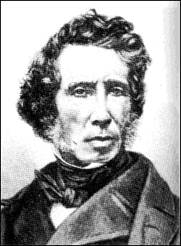
德国有机化学家。1800年7月31日生于法兰克福附近埃施耳斯亥姆的一个医生家庭。少年时代就特别喜爱收集、研究矿物和做化学实验。1820年入马尔堡大学。1823年以对尿素的研究获得医学博士学位，接着又去贝采利乌斯那里留学一年。1824年回国后任柏林工艺学校教授。1831年成为卡塞尔高等学校教授。1836年任格丁根大学化学教授。1854年被选为英国皇家学会会员，1872年获得该会的科普勒奖章。还是法国科学院院士和其它一些学术团体的成员。1882年9月23日在格丁根逝世。
维勒完成了数量多得惊人的实验研究工作。他发现了硅烷；分析过大量的矿物，制备出许多稀有金属化合物；发现碳化钙并从中制取乙炔；研制出制备金属铝和比较容易地制取磷的方法；证实氰与水作用可生成草酸；分离出铍；还和李比希合作研究了许多有机化合物。 1828年，他通过蒸发（异构）氰酸铵溶液制得尿素。这一成就动摇了“生命力论”对有机化学发展的束缚，为有机化学的发展指明了方向。
维勒主要著作有：《无机化学平面图》、《有机化学平面图》、《分析化学实验指南》等。维勒终生热爱化学，一天不做实验他就不能安稳地入睡。他尊重科学，注重友谊。他与李比希在学术争论中相互促进，竞相争高的事迹成为科学史上的佳话。维勒曾写过这样一段话谈及他和李比希的友谊：“我可以打个比喻，如果以我俩的名义发表的某些小文章是我们当中的一个人完成的，那么，这同时也是赠给另一个人的绝妙小礼物。我想这就可以使你了解我俩之间的相互关系了。”
柯尔伯
（Kolbe，1818—1884）
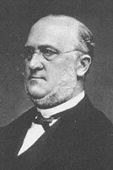
柯尔伯，德国化学家。1838年师从维勒，开始攻读化学。1842年去马尔堡担任本生的助手，稍后应聘参加李比希和维勒主持的《纯化学和应用化学辞典》的编辑工作。自1851年任马尔堡大学的教授，自1861年任莱比锡大学的教授。
他是最早实现用无机物合成有机物的化学家之一。他认为用无机物合成有机物可以用取代来实现合成。1843—1845年他用二硫化碳、氯气和水合成醋酸。他修正了结构基因的概念，还预见了仲醇和叔醇的存在。1860年由酚和二氧化碳合成水杨酸称为柯贝尔—施密特反应。1869年起任《应用化学杂志》的编辑。
贝特勒
（Berthelot, Pierre Engène Marcelin，1827—1907）
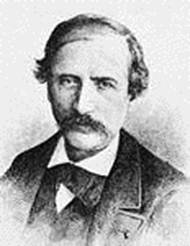
法国化学家。1827年10月27日生于巴黎；1907年3月18日卒于巴黎。贝特勒在法兰西学院读书时，是在杜马、雷尼奥和巴拉尔等人的教导下研读的。他于1854年获得博士学位，博士论文涉及天然脂肪的合成。他使甘油和脂肪酸结合生成脂肪，这使有机合成向前迈进了决定性的一步，并发展了维勒早些时候的工作。1859年，贝特勒在高级制药学院当教授，1865年转到法兰西学院。他继续系统地合成各种有机化合物，使它们大批地涌现出来，其中包括甲醇、乙醇、甲烷、苯、乙炔等著名产物。
如果说认为有生命力就能产生有机物的学说已被维勒及其它一些人所摧毁，那么可以说贝特勒把它碾成碎屑。贝特勒是第一个合成自然界所不存在的有机物的人。他使甘油和并不天然地存在于脂肪中的脂肪酸结合，从而制成了不属于生物体的有机物。从那时起，就越来越难以把有机化学说成是生命产物的化学了。有机化学逐渐成为限于碳化合物的化学。贝特勒在某些方面是保守的，他是那些勉强采纳原子的国际规定的人之一，曾带头徒劳无益地反对坎尼扎罗有关原子和分子的提法。
19世纪60年代，贝特勒放下合成工作，转向热化学。热化学研究化学反应中的热量。虽然他的一些工作与赫斯所取得的成果发生了重复，但他的工作更为深入。他设计了一种热量器，可以用来测定化学反应产生的热量。贝特勒创造了“放热型”和“吸热型”这两个术语，用来分别表示放出热量和吸收热量的反应。在普法战争的混乱当中，贝特勒负责巴黎的科学防务。1871年法兰西第三共和国成立后，他活跃地参与公共事务。1881年，他成为参议员，1886年进入内阁，甚至还在1895年担任了一年的外交秘书。
他对科学的行政管理也不逊色，1889年他继巴斯德之后担任法国科学院的终身秘书长。 贝特勒（亦译“贝特罗”）共出版约1,600本书和论文，包括《合成有机化学》（1860）、《烃类》（1901）、《化学力学》（1878）和《热化学》（1897）。他在历史和哲学方面的著作包括希腊、叙利亚和阿拉伯有关炼丹术和化学论著的译述。曾为其支持的法国大百科全书撰稿。晚年致力於农业化学研究和他的历史著述。
凯库勒
（Friedrich August Kekule，1829—1896）
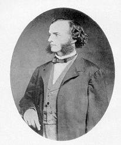
德国有机化学家。1829年9月7日生于达姆施塔特。上中学时，对一切科学现象都感兴趣，但对化学并无明显的爱好。1847年入吉森大学学习建筑。当他听了李比希的化学课后，就被这门奇妙的、有着无限发展前途的新学科吸引住了，于是转而学习化学。1851年留学巴黎。1852年获得博士学位。接着就去伦敦研究化学。1855年回国后，先后在海德堡大学和比利时的根特大学，最后在波恩大学任教。1875年被选为英国皇家学会会员，并获得该会的科普勒奖章。他还是法国科学院院士和国际化学学会的会员。1896年7月13日在波恩逝世。
凯库勒在有机化学理论方面贡献很大。1857年左右，他归纳了有关有机物分类的类型论，增加了硫化氢型和沼气型；1858年就指出在有机化合物中，碳的化合价为4价，并提出碳链学说；1861年用现代语言把有机化学定义为，研究碳化合物的化学；1865年提出苯的环状结构理论。这些成就为有机结构理论奠定了坚实的基础，极大地促进了有机化学的发展。此外，他还发现过一些有机化合物。
凯库勒主要著作有：《苯衍生物化学》、《有机化学教科书》、《有机化合物结构研究》等。被誉为化学建筑师的凯库勒、具有严谨的工作作风，独特的批评与自我批评精神及值得称赞的谦逊。他总是指出自己的全部思想和工作，只不过是前人成就的继续。他志愿为科学献身，他说：“到达知识的人，往往是以渴望求知为动力的，用尽毕生精力进行探索的人，而绝不是那些以谋求私利为目的的人。”
布特列洛夫
（A. M. Butlerov，1828—1886）
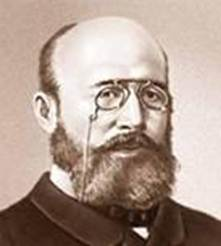
俄国有机化学家。1928年9月6日生于喀山市齐斯托波镇一个军官之家，父亲希望他成为一位数学家，然而他却一个劲地喜爱化学。1844年考入喀山大学化学系，在齐宁的影响下从事有机化学的研究。1851年以《有机配合物的氧化反应》论文获硕士学位。1853年以《从俄罗斯一家工厂的轻油中提取与樟脑类似的物质》的论文获莫斯科大学化学—物理学博士学位。1857年以喀山大学讲师身份被派往西欧各国作访问学者，会见凯库勒、本生等著名化学家，并在霍夫曼、武尔慈等有机化学实验室工作。
1858年，布特列洛夫在武尔慈实验室合成亚甲基二醇的醋酸盐而出名，回国后于1868年被提升为喀山大学化学教授，此后一度担任喀山大学校长。1874年当选为彼得堡科学院院士。1876年选为俄国物理—化学学会化学分会主席。布特列洛夫的一生都致力于有机化学事业，对任何高官厚禄均不屑一顾。他宁愿辞去喀山大学校长，去从事有机化学研究。他终身从事化学研究和教育事业，诲人不倦，培养出像马尔科夫尼科夫这样著名的有机化学家。可惜正值盛年的他，由于疲劳过度，于1886年8月17日突然去逝，终年仅58岁。
布特列洛夫是世界闻名的俄国化学家，他是化学结构理论的创立者之一，是俄国有机化学家组成的喀山学派的领导人和学术带头人，这个学派荟萃了一大批俄国化学界的精英，在世界化学史上有着深远的影响。他首先提出了有关有机物的结构理论。据此进行了一些有机物的预言与合成，如叔丁醇、异丁烯、乌洛托品和糖类化合物等。他的结构学说对有机化学的发展起着很大的推动作用。此外，他还发现了异丁烯的聚合反应。
1864年写了《有机化学通论导言》，书中根据有机物的分子结构对有机物进行了分类。布特列洛夫的主要著作还有：《论物质的化学结构》、《有机化学综合研究导论》和《化学结构取代理论》等。
范特霍夫
（Jacbus Henricus van’t Hoff，1852—1911）
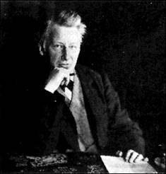
荷兰化学家。1852年8月30日生于鹿特丹的一个医生家庭。早在上中学的时候，范特霍夫（也译作范特荷夫）就迷上了化学，经常从事自己的“小实验”。1869年入德尔特高等工艺学校学习技术。1871年入莱顿大学主攻数学。1872年去波恩跟凯库勒学习，后来又去巴黎受教于武尔慈。1874年获博士学位。1876年起在乌德勒州立兽医学院任教。1896年迁居柏林。1885年被选为荷兰皇家学会会员，还是柏林科学院院士及许多国家的化学学会会员。1911年3月1日在柏林逝世。
范特霍夫首先提出碳原子是正四面体构型的立体概念，弄清了有机物旋光异构的原因，开辟了立体化学的新领域。在物理化学方面，他研究过质量作用和反应速率，发展了近代溶液理论，包含渗透压、凝固点、沸点和蒸气压理论；并应用相律研究盐的结晶过程；还与奥斯瓦尔德一起创办了《物理化学杂志》。1901年，他以溶液渗透压和化学动力学的研究成果，成为第一个诺贝尔化学奖获得者。
范特霍夫主要著作有：《空间化学引论》、《化学动力学研究》、《数量、质量和时间方面的化学原理》等。范特霍夫精心研究过科学思维方法，曾做过有关科学想象力的讲演。他竭力推崇科学想象力，并认为大多数卓越的科学家都有这种优秀素质。他具有从实验现象中探索普遍规律性的高超本领，同时又坚持：“一种理论，毕竟是只有它的全部预见能够为实验所验证的时候才能成立。”
勒贝尔
（Le Bel, Joseph Achille，1847—1930）
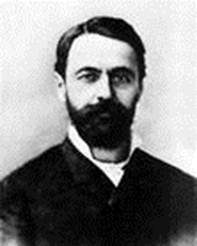
法国化学家，1847年1月24日生于下莱茵省梅克维勒—佩谢尔布龙，1930年8月6日卒于巴黎。勒贝尔比大多数的科学家要幸运些，因为他家开设石油厂，经济上是颇富足的。他继承了这笔产业后，就建立了自己的实验室。他是在巴黎受的教育，在巴拉尔的指导下学习。曾在拜访巴拉尔时与范特霍夫有过一面之交。那时勒贝尔还是来巴黎就读的大学生。
1874年，他比范特霍夫晚两个月，完全独立地宣布了旋光性与分子结构之间的关系方面的理论。虽然他的分析不像范特霍夫那样非常精细，但是照例是要让他分享同等的荣誉。勒贝尔不像范特霍夫（亦译范托夫），没有继续从事更伟大的事业。1891年他曾试图证实氮原子键的空间配置也能产生旋光性。虽然勒贝尔的这一想法是正确的，但他的论证是错误的。这一任务只好留待波普来完成了。
E. 费歇尔
（Email Fischer，1852—1919）

德国有机化学家费歇尔，1852年10月9日生于波恩附近的奥伊斯基尔亨。1871年入波恩大学，是凯库勒的学生。后又转入斯特拉斯堡大学跟拜尔学习，1874年毕业，并成为该校历史上最年轻的博士。曾任慕尼黑、埃尔兰根、维尔茨堡及柏林大学的教授。1899年被选为英国皇家学会会员和法国科学院院士，也是柏林、慕尼黑和维也纳等科学院的院士。1919年7月15日在柏林逝世。
1875年，费歇尔发现了苯肼。他用苯肼作为通用的羰基试剂，广泛地研究了糖类的结构、合成和构型，为整个糖类化合物打下了基础。他合成了第一个核酸化合物；研究了尿酸；确定了咖啡碱与可可碱的化学结构。 1899年起，开始研究氨基酸，改进了氨基酸的分析方法；确定了几种蛋白质的组成；特别是完成了多肽的合成程序。1907年合成的一个含18个氨基酸的多肽，与天然蛋白质极其相似。
他还研究过三苯甲烷染料、鞣酸、吲哚、嘌呤等等。由于这些贡献，费歇尔于1902年获得诺贝尔化学奖。主要著作有：《碳水化合物化学及其对生理学的意义》、《有机试剂制造指南》等。费歇尔不追求名利地位，终生尊重自己的老师，不论对教学还是研究工作，都是一丝不苟。他常说：“做学问要在细小处求甚解，永远不人云亦云，决不沽名钓誉。……总之，安于贫贱而不妄，勤于解难而不惑。这些都不是任何别人能够代替的，一切全靠自己。”
纽曼
（Melvin Spencer Newman）
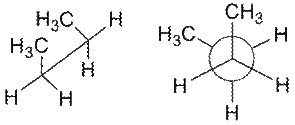
纽曼式（Newman式）是表示有机化合物立体结构的一种方法，由美国化学家纽曼于1952年命名（Melvin Spencer Newman）。它是从碳—碳键的键轴上看过去，圆形代表两个等大的碳原子重叠，交叉的三根键与处于前方的碳原子相连，到圆环截止的三根键与后方的碳原子相连。
若该碳—碳键为重叠式构象，六根键中前后两两重合，则通常把后方的键稍微偏转一个角度，以表示出来。其他表示有机化合物结构的还有伞形式、锯架式、键线式，以及费歇尔投影式和哈沃斯透视式等。
齐格勒
（Karl Waldemar Ziegler，1898—1973）
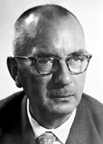
卡尔•齐格勒，联邦德国有机化学家。1898年11月26日生于黑尔萨，1973年8月12日卒于米尔海姆。1920年获马尔堡大学化学博士学位。1927年在海德堡大学任教授。1936年任哈雷—萨勒大学化学学院院长。1943年任威廉皇家学会（后称马克斯•普朗克学会）煤炭研究所所长，直至逝世。
齐格勒在金属有机化学方面的研究工作一直占世界领先地位。1953年他利用铝有机化合物成功地在常温常压下催化乙烯聚合，得到聚合物，从而提出定向聚合（齐格勒—纳塔聚合）的概念。因合成塑料用高分子并研究其结构，与G.纳塔共获1963年诺贝尔化学奖。
纳塔
（Giulio Natta，1903—1979）
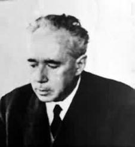
居里奥•纳塔，意大利化学家，1903年2月26日生，1979年5月2日去世。1924年毕业于米兰工学院并获得工程博士学位。曾在米兰、都灵、帕多瓦和罗马等地的大学担任教授。1938年回母校任教授兼工业研究所所长，1978年改为退职荣誉教授。
居里奥•纳塔卓越的贡献是，1954年在德国化学家K.齐格勒乙烯低压聚合制成聚乙烯重大发现的基础上，发现以三氯化钛和烷基铝为催化剂，丙烯在低压下高收率地聚合，生成分子结构高度规整的立体定向聚合物──聚丙烯，具有高强度和高熔点，开创了立体定向聚合的崭新领域。1957年，居里奥•纳塔直接参与在意大利的世界上第一套聚丙烯生产装置的建立，他的发现导致合成树脂和塑料的一个大品种问世。
此外，居里奥•纳塔进一步成功地将其催化剂分别用于1-丁烯和4-甲基-1-戊烯的立体定向聚合，首先制成了分子结构高度规整的聚1-丁烯和聚甲基戊烯。1957年，他首创以钒卤化物和烷基铝为催化剂，使乙烯和丙烯共聚合制成无规结构的乙丙橡胶。在意大利建成了世界上第一套乙丙橡胶小型生产装置。
居里奥•纳塔和齐格勒所开创的配位催化聚合和立体定向聚合，应用于烯烃、二烯烃及乙烯基单位的聚合等，开拓了高分子科学和工艺的崭新领域，成为发展史上的里程碑，被称之为齐格勒—纳塔催化剂及齐格勒—纳塔聚合。两人因此而共获1963年诺贝尔化学奖。
马尔科夫尼科夫
（Markovnidov, Vladimir Vasilevich，1838—1904）
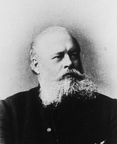
弗拉基米尔•瓦西里耶维奇•马尔科夫尼科夫（亦译马可尼科夫），俄国化学家。1837年12月25日生于高尔基州的尼雅基内诺，1904年2月11日卒于莫斯科。最早攻读经济学，毕业后成为亚历山大•米哈伊洛维奇•布特列洛夫的助理，在喀山和圣彼得堡工作。1860年，他前往德国，向赫尔曼•柯尔伯和埃米尔•埃伦迈尔学习化学。1869年，他回到俄罗斯，获得了博士学位，并接替布特列洛夫担任喀山大学的化学教授。1871年，在一次与校方的冲突后，他前往敖德萨大学任教。两年后，他前往莫斯科大学任职直到逝世。
马尔科夫尼科夫最著名的成就是他于1869年提出的关于氢卤酸与烯烃亲电加成反应的马氏规则。在这一规则中，他提出卤素加成到连接氢原子最少的碳上，氢加成连接有最多氢原子的碳上。这一规则在预测烯烃加成反应产物方面十分重要，但是并不能解决所有的问题。例如，溴化氢在加成时既可遵循马氏规则，也可遵循反马氏规则，这一问题直到1933年才由莫里斯•S•卡拉施由给出合理解释。
马尔科夫尼科夫在活着的时候并没有获得相应的承认。他的许多论文发表时使用的是俄语，使许多西欧化学家难以理解，但1870年他提出马氏规则的那一篇论文使用的是德语。然而，这一规则只是他的一篇26页长的关于丁酸异构体的论文中一个4页的脚注，而且即使按照当时的标准这一理论的实验依据仍然太少。许多研究者认为，这一规则当时仅仅是一种猜想，直到大约60年后才得到承认在大多数情况下适用。
另外，当时人们认为碳原子只能组成六元环，而马尔科夫尼科夫在1879年合成了四元碳环，在1889年合成了七元碳环推翻了这一说法，为有机化学的发展做出了贡献。马尔科夫尼科夫还证明丁酸与异丁酸具有相同的化学式（C4H8O2）和不同的结构与性质，即它们是异构体。
库切洛夫
（1850—1911）
俄国化学家。彼得堡农林学院毕业。曾任彼得堡农林学院教授。主要研究有机合成。用汞化合物为催化剂使乙炔同系物和水加成形成羰基化合物。此反应称“库切洛夫反应”，是制备乙醛的重要方法，也是合成醋酸的基础。
狄尔斯
（Diels, Otto Paul Hermann，1876—1954）
狄尔斯（亦译迪尔斯），德国化学家。1876年1月23日生于汉堡，1954年3月7日卒于基尔。狄尔斯是一位柏林大学教授的儿子，他就读于柏林大学并在1899年在该校获得哲学博士学位，他是在费歇尔的指导下完成他的工作的。毕业后他即作为化学教授留在该校。1916年他转到基尔大学，在那里他一直呆到1945年退休。
对于任何有机化学家来说，合成一种新的重要化合物乃是一种令人高兴的成就。1906年狄尔斯即取得了这样的成就，当时他分离出一种不寻常的物质——二氧化三碳（C3O2）。然而，发现一种把原子化合在一起的技术，而且这种技术可用于许多不同种类的合成中，是更为重要的。狄尔斯和他的年轻助手阿尔德一起，在1928年发现了这样一种技术——双烯合成。
按照惯例，将这一反应用发现者的名字命名，故一般称其为狄尔斯—阿尔德反应。从本质上说，这一反应是将两种化合物结合在一起以形成原子环的方法。狄尔斯研究了这一反应的潜在可能性，其方法是用这一反应合成各种不同的化合物。其他人也应用这一反应合成生物碱、聚合物和其他的复杂分子。由于发现了这一合成技术，狄尔斯和阿尔德得到了1950年诺贝尔化学奖。
阿尔德
（Kurt Alder，1902—1958）
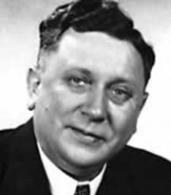
德国化学家，1902年7月10日出生，1958年6月20日卒于科隆。1927至1928年间，阿尔德和奥托•狄尔斯共同发现狄尔斯—阿尔德反应（Diels-Alder Reaction），于1950年因此获得诺贝尔化学奖。
由共轭双烯与烯烃或炔烃一步进行的协同反应生成六元环的反应，是有机化学合成反应中非常重要的碳碳键形成的手段之一，也是现代有机合成里常用的反应之一。即使在提倡绿色化学的今天，其重要性仍然是不言而喻的。
巴斯德
（Louis Pasteur，1822—1895）
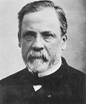
路易·巴斯德，法国微生物学家、化学家，微生物学的奠基人之一。1822年12月27日，巴斯德生于法国汝拉省多勒，父亲是拿破仑军骑兵队的一名退伍军人，后成为皮鞋匠。1847年，巴斯德于巴黎高等师范学院毕业。1848年成为物理教授。巴斯德以否定自然发生说（自生说）并倡导疾病细菌学说（胚种学说）和发明预防接种方法而闻名，被世人称颂为 “进入科学王国的最完美无缺的人”。
1848年，巴斯德研究酒石酸的旋光性，发现酒石酸有右旋和左旋现象及内消旋体和外消旋体，这一发现对结构化学的发展具有重要影响。后提出分子不对称性理论，开创了立体化学研究的途径。巴斯德还发现生物体对这两种不对称性的晶体具有明显的选择性。
生物学上，巴斯德的证实发酵作用都是由于微生物引起，创立“巴斯德消毒法”（60～65℃作短时间加热处理，是杀死有害微生物的一种消毒法）并应用在各种食物和饮料上；并证实传染病都是微生物在生物体内的发展引起。在当时，巴斯德消毒法所获得的利润足够支付法国因为普法战争战败而向普鲁士缴纳的战争赔款。
1868年，巴斯德首次中风。1881年着手研究狂犬病，提出了预防接种措施，认为传染病的微生物在特殊的培养之下可以减轻毒力，变成防病的疫苗。1885年以灭毒的方式研制出灭毒狂犬病疫苗。1887年再次中风。1895年9月28日卒于巴黎。
鲍林
（Linus Carl Pauling，1901—1994）
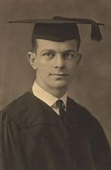
美国化学家鲍林，1901年2月28日生于俄勒冈州波特兰市。父亲是药剂师并自己开设药房。1922年在俄勒冈州立农学院毕业，获得化学工程理学士学位。1925年在加州工学院获得这个学院历史上仅有的优秀哲学博士学位。此后在加利福尼亚等著名大学任教，从1948年起还担任牛津、哈佛、麻省理工学院等七、八所著名大学的特邀访问教授。从1973年到现在任鲍林科学和医学研究所研究教授，
鲍林对化学最大的贡献是关于化学键本质的研究及其在物质结构方面的应用。他把量子力学应用于分子结构，把原子价理论扩展到金属和金属间化合物，并发展了原子核结构和核裂变过程本质的理论。近些年来 ，他又向生物学方面渗透，把化学应用于生物学和医学，如研究了蛋白质的结构、麻醉作用的分子基础等。
鲍林共发表了400多篇论文和十几本专著，主要著作有：《化学键的本质》、《线光谱的结构》、《普通化学 》、《大学化学》等。由于他在化学键理论和应用研究方面的卓越贡献，荣获1954年诺贝尔化学奖 。此外，还获得了国内外几十种奖励和奖章。国内外有三十几所大学授予他荣誉博土学位，还是十几个国家的科学院荣誉院土。
鲍林对社会问题也十分注视。他爱好和平，呼吁世界人民注意大气层核试验所释放的放射线危险。于1963年10月获得1962年诺贝尔和平奖，还接受了列宁国际和平奖金等几种国际性的和平奖。他发表了大约 100篇关于社会和政治问题（特别是关于和平问题）的文章。鲍林曾于1973年9月和1981年6月来中国进行访问和讲学，受到我国科学工作者的欢迎和敬佩。
1994年8月19日，鲍林以94岁高龄离世。他说，他很少同情那些才华横溢但又不愿刻苦的人。他还说：“我并不认为我们完全理解自然的时刻会终将到来，但你总不能只拿出一个事实，就说我不了解自然。你必须断定这个事实是否与我们对自然界总的理解有关，而这就是我一直致力要做的。”
法拉第
（Michael Faraday，1791—1867）
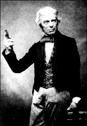
英国化学家和物理学家。1791年9月22日生于一个贫寒的铁匠家庭，但是，他的父母还是设法供他上学识字。13岁那年，他就不得不为谋生而当上报童，后又去一个印刷所当了徒工，但始终坚持刻苦自习。
1812年，一位顾客送给他一张戴维在皇家研究院的讲演票。他听了讲演以后，将笔记仔细整理，寄给皇家学会会长，想谋求一个实验室助手的位置，但未得到回音。他没有气馁，又给戴维写了一封信，说明自己愿意献身科学的志愿，戴维亲切地答复并接见了他，在1813年初录用他做实验室助手。同年10月，他随戴维到欧洲各地访问、讲学至1815年回国。1825年接替戴维的实验室主任工作。1824年当选为皇家研究院富勒讲座化学教授。
法拉第一生有许多发明和发现，如发现了数种含氯的有机物；发现了苯；1837年他引入电场和磁场的概念；1825年又引入电力线和磁力线的概念，并解决了金属线与磁铁的相对运动是产生电流的必要条件问题；1832—1834年间，由实验得出两个电解定律，从而把电化学这一学科置于科学的基础上。
法拉第主要著作有：《化学操作法》、《电的实验研究》、《化学与物理的实验研究》等。 法拉第一生生活俭朴，待人和蔼。晚年他辞去各种职务，但仍致力于科学普及工作。全世界赠给他的名誉达到94个，但他告诉朋友说：“我并不能说我不保重这些荣耀，而且我承认其很有价值，不过我却从来不曾为求这些荣耀而工作。”
杜瓦
（Sir James Dewar，1842—1923）
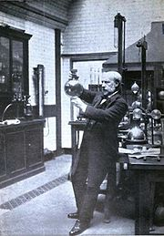
詹姆斯•杜瓦爵士，苏格兰化学家及物理学家，1842年9月20日在福斯河上的坚卡丁出生，在家里是六兄弟中最年幼的一位，父母在他15岁时双双离世。他进入爱丁堡大学学习并在那里毕业。1875年他成为剑桥大学教授，1877年成为英国皇家学会会员。他提出了一种苯的结构设想，即杜瓦苯，并在光谱分析方面作了大量工作。
他主要的工作是在低温学研究上。1880年左右他开始研究液氧，1885年通过改进工艺他可以集齐1瓶液氧。1891年他提出了可以生产工业级产量液氧的生产过程。1892年他发明了以他名字命名的真空容器——杜瓦瓶用于低温现象的研究。随之开始氢气的液化和固化研究。1899年他成功完成了这个研究，并可以获得-260℃的低温，为后人研究低温现象提供了条件。
1904年他与皮埃尔•居里一同研究镭衰变成氦的过程，同年被授予爵士。他与别人共同研究金属的电阻在-200～200℃温度范围内的变化情况，指出达到绝对零度时，金属电阻会变为零。1905年他发现把椰子壳烧成的木炭冷却到-185℃时，木炭非常容易吸收空气，从而可以产生真空，这一技术在原子物理的实验中非常有用。
他还和阿贝尔一起发展了无烟火药。第一次世界大战期间，他发明的无烟火药起到了很大作用，但是他的低温学研究却因为资金缺乏而终止，他开始转向气泡表面张力研究。1923年3月27日，他在伦敦离世，享年81岁。
傅瑞德尔
（C. Friedel，1832—1899）
傅瑞德尔（亦译傅瑞尔、傅瑞德），法国化学家, 他曾在武尔慈（C. A. Wurtz）指导下于索崩学院（巴黎大学的一部分）研究化学，并于1869年获得博士学位。他研究过矿物学，1876年傅瑞德在索崩学院成为矿物学教授，8年后继承了武尔慈的工作成了有机化学教授。
傅瑞德在矿物学和有机化学方面取得过许多卓越的贡献。他首先由丙酮还原制得异丙醇，还合成乳酸、甘油，他也从事过有机硅化合物的研究工作，他指出硅和碳的化合物是类似的。他与克拉夫茨（J. A. Crafts）一起研究芳香族化合物的烷基化和酰基化反应。这个反应是有机合成中的一个重要反应，被称为Friedel-Crafts反应。
Friedel一生得过许多荣誉，其中包括他1880年获得过戴维奖章，他还被许多会社聘请为名誉会员。他是法国化学会的创始人之一，并担任过四次化学会会长。
克拉夫茨
（J. A. Crafts，1839—1917）
克拉夫茨生于美国麻省波士顿，他曾获得过理学博士学位。他在英国剑桥用一年时间学习过工程学，后来于1859年去Freiburg学习矿物学。1861年他又去法国的巴黎在武尔慈指导下学习。在1865年重新回到美利坚合众国。回国后他曾在新建立的康奈尔大学任教授，后来他又在麻省理工学院任教4年，为普通化学教授。
从1874年到1891年他再次去巴黎与傅瑞德教授协作，发现了芳香烃在催化剂作用下，芳环上的氢被烷基或酰基取代，这就是著名的Friedel-Crafts反应。克拉夫茨在计温学上有过重要贡献。他与1891年从巴黎回到美国麻省理工学院搞教学工作，以后为该学院的院长。
路易斯
（Gilbert Newton Lewis，1875—1946）
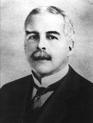
路易斯，美国化学家，1875年10月25日生于马萨诸塞州的一个律师家庭。他智力早慧，13岁入内布拉斯加大学预备学校，毕业后入该大学，两年后又转入哈佛大学，1896年、1898年和1899年先后获学士学位、硕士学位和博士学位。1900年在德国格丁根大学进修，回国后在哈佛任教。1904—1905年任菲律宾计量局局长。1905年到麻省理工学院任教，1911年升任教授。1912年起担任加利福尼亚大学化学学院院长兼化学系主任。曾获得英国戴维奖章、瑞典阿累尼乌斯奖章、美国的吉布斯奖章和里查兹奖章。还是苏联科学院的外籍院士。1946年3月23日逝世。
路易斯具有很强的开辟化学研究新领域的能力，对理论化学发展做出重要贡献。1901年和1907年，他先后提出“逸度”和“活度”概念；1916年提出共价键的电子理论；1921年将离子强度的概念引入热力学，发现了稀溶液中盐的活度系数由离子强度决定的经验定律。1923年与兰德尔合著《化学物质中的热力学和自由能》，深入探讨了化学平衡，对自由能、活度等概念做出了新的解释。同年，提出新的广义酸碱概念，成为化学反应理论的一个重大突破。
路易斯主要著作有：《价键及原子和分子的结构》、《科学的剖析》等。路易斯喜欢采用非正统的研究方法，他具有很强的分析能力和直觉，能设想出简单而又形象的模型和概念。有时，他未充分查阅文献资料就开展研究工作，他认为，若彻底掌握了文献资料，就有可能接受前人的许多偏见，从而窒息了自己的独创精神。他培养了许多化学家，成为路易斯学派的卓越领导师和领袖。
伯奇
（Arthur John Birch，1915—1995）
伯奇还原反应（Birch还原）是指用钠和醇在液氨中将芳香环还原成1,4-环己二烯的还原反应。此反应最早由澳大利亚化学家Birch在1944年发表。Birch还原的重要性在于：尽管剩下的双键（非芳香性）更为活泼，该反应却能停留在环己双烯上，而不继续还原。
霍夫曼
（A W Hofmann，1818—1892）
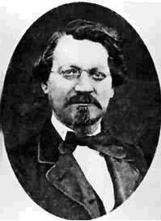
霍夫曼，德国有机化学家，1818年4月8日生于吉森。起初在吉森大学学习法律和哲学，1841年获得博士学位。1843年转而研究化学，成为李比希的学生。1845年，经李比希推荐，到英国皇家化学学院任化学教授，在那里一直工作了20年。史鲁克斯、阿贝尔、珀金（亦译柏琴）都是他的学生。1864年回国后，先后担任波恩大学和柏林大学的教授。1851年，被选为英国皇家学会的会员。1868年，他创立了德国化学学会，并担任该会会长多年。1892年5月5日在柏林逝世。
霍夫曼的研究范围非常广泛。1843年，他研究了苯胺的组成；1850年通过碘代乙烷和氨作用，制得伯胺、仲胺和叔胺，进而制得季铵盐，证实了胺与氨的关系，给类型说增加了一个新的类型——氨型；和他的学生们从煤焦油中提取出苯胺衍生物，制成多种染料，为现代染料化学和染料工业奠定了基础。
霍夫曼还发现了异氰酸苯酯、二苯肼、二苯胺、异腈和甲醛等；研究芥子素和芥子油，并发现苯基芥子油；制定蒸气密度法，改进了有机分析和操作；1873年与马尔修斯一起发现甲基苯胺和二甲基苯胺；1881年发现溴和强碱与酰胺作用是制备胺的一般方法，人称霍夫曼反应；还提出有关络合物的“霍夫曼胺盐理论”等等。一生中共发表了数百篇论文。
休克尔
（E A A J Hückel，1896—1980）
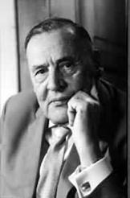
德国物理化学家。1896年8月9日生于柏林夏洛腾堡。1914年入格丁根大学攻读物理。曾中断学习，在格丁根大学应用力学研究所研究空气动力学。1918年重新攻读数学和物理，1921年在P 德拜的指导下获博士学位。他在格丁根大学工作两年，曾任物理学家M 玻恩的助手。1922年在苏黎世工业大学再度与德拜合作，任讲师。1930年在斯图加特工业大学任教。1937年任马尔堡大学理论物理学教授。
休克尔主要从事结构化学和电化学方面的研究。他1923年和德拜（Debye，1884—1966）一起提出强电解质溶液理论，提出“离子氛”的概念，推导出强电解质稀溶液中离子活度系数的数学表达式，也就是德拜—休克尔极限定律。1931年提出了一种分子轨道的近似计算法（休克尔分子轨道法），主要用于π电子体系。
他在20世纪30年代还对芳香烃的电子特性在理论上作出了解释，并总结出休克尔规则：环状共轭多烯化合物中π电子数符合4n+2（n为0, 1, 2, 3等整数）者，具有芳香性。
格利雅
（Viccor Grignard，1871—1935）

维克多·格利雅，法国有机化学家，1871年5月6日生于法国瑟堡一个造船师的家庭中。年轻时候是个浪荡公子。1892年，在一次上流社会的舞宴中，他发现一位初次露面的美人，便傲然邀其作舞伴，不料遭到断然拒绝。当格利雅得知这是一位来自巴黎的女伯爵时，立即上前致歉。
女伯爵更加冷漠以对：“请站远点，我最讨厌你这种花花公子挡住自己的视线！”从次以后，格利雅改过自新，奋发向上，努力学习，并入里昂大学学习，并于1910年在南希大学任教授。一战中他曾参与过化学武器的研究，主要为光气的制造和芥子气的检测。战时他的“对手”则是德国化学家——另一个诺贝尔化学奖得主弗里茨·哈伯。
格利雅最著名的科学贡献，是他1900年发现了一种增长碳链的有机合成方法。这种方法被后人称为“格利雅反应”，反应中用到的烃基卤化镁则被后人称为“格氏试剂”。1901年，由于格利雅发现了格氏试剂而被授予博士学位。1912年他与他的同事法国化学家保罗·萨巴捷一同获得了诺贝尔化学奖。1935年12月13日他逝世于法国里昂。
武尔慈
（Adolphe Wurtz，1817—1884）
武尔慈（亦译武兹），法国化学家，1817年11月26日生于斯特拉斯堡。1843年毕业于斯特拉斯堡医学院，获医学博士学位。1845年成为杜马的助手。1857年任化学及毒物学教授。1866—1875年任巴黎医学院院长。1875年后任巴黎科学院的有机化学教授。1864年被选为英国皇家学会会员。1867年当先为法国科学院院士。1884年5月12日在巴黎逝世。
1844—1849年，他研究了磷的含氧酸；1846年发现磷酰氯，测定了次磷酸的结构；1848年从烷基异氰制得胺；1855年发明了将卤代烷和金属钠作用制备烃类的方法，人称“武尔慈反应”。1856年制备了乙二醇及其衍生物，包括从丙二醇制备乳酸等；1859年合成环氧乙烷；1862年用钠把醛还原成醇；1872年研究了醛醇缩合反应；他拥护日拉尔的见解，对化学理论的发展也做出了贡献。
武尔慈主要著作有：《理论化学与应用化学词典》、《医学化学概要》、《生物化学概要》等。此外，他还主编了《化学与物理年鉴》。值得注意的是，武尔慈反应还导致了另一个极有用的试剂的发明，即格利雅试剂——法国人巴比尔指导研究生格利雅研究用镁来代替钠做武尔慈反应，结果反应没有成功，却导致了格利雅试剂的发明。
维蒂希
（Georg Wittig，1897—1987）
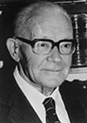
格奥尔格·维蒂希（亦译魏悌锡，或维蒂西），德国化学家，1897年9月16日生于柏林，他曾在土宾根大学读书。第一次世界大战使他辍学从军，战后他继续求学。1923年他毕业于马尔堡大学，1926年获该校博士学位。他曾在许多大学任教。1956年被聘为海德尔堡大学教授。1967年被选为荣誉教授。是巴伐利亚科学院、法国科学院和纽约科学院院士，伦敦化学会，瑞士化学会会员。
维蒂希在1954年发明维蒂希反应，其在烯烃合成中有十分重要的地位。由于他对含磷有机化合物在有机合成方面应用的出色研究工作，获得了1979年诺贝尔化学奖。在立体化学、烃化学、炔化学、碳阴离子研究上，维蒂希也取得不少成果。他发明了一种蒸馏烧瓶，被称为维蒂希烧瓶。除诺贝尔奖外，维蒂希还获得海德堡科学院、哥廷根科学院、美国化学会、赫尔辛基大学奖金。
黄鸣龙
（1898—1979）
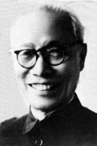
黄鸣龙，江苏扬州人，著名有机化学家，中国科学院院士。1898年8月6日出生于江苏省扬州市。1918年，黄鸣龙在浙江医药专科学校（现浙江大学医学院）毕业，随即远赴瑞士，在苏黎世大学学习。1922年在德国柏林大学深造，并在1924年，获哲学博士学位。1924年回到中国后，历任浙江省卫生试验所化验室主任、卫生署技正与化学科主任、浙江省立医药专科学校药科教授等职。
1934年，黄鸣龙再度赴德国，先在柏林用了一年时间补做有机合成和分析方面的实验，并学习有关的新技术，后于1935年入德国维尔茨堡大学化学研究所进修。1938—1940年，黄鸣龙先在德国先灵药厂研究，后又在英国研究雌性激素。1940—1945年，黄鸣龙回到国内任中央研究院化学研究所（昆明）研究员兼西南联合大学教授。其间进行了药物山道年的立体异构研究，并为国内外后续研究奠定理论基础。
1945至1952年，黄鸣龙作为访问学者来到美国哈佛大学做研究，其间创造性的改进了沃尔夫—凯惜纳还原反应，此后简称为黄鸣龙改良还原法。后到默克药厂做研究员。1952年，黄鸣龙再次回国，任军事医学科学院化学系主任。1955年，选聘为中国科学院院士，并于次年转到中国科学院上海有机化学研究所工作。1958年，研究出了利用国产薯蓣皂甙元为原料，七步合成可的松，获国家创造发明奖。之后，黄鸣龙的研究方向主要放在甾体化合物上，并合成出多种甾体激素类药物及口服避孕药。1979年7月1日去世。
坎尼扎罗
（Stanislao Cannizzaro，1826—1910）
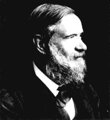
意大利化学家，1826年6月13日生于西西里的巴勒莫。父亲是警察局长。他毫不费力地掌握了中学的各门课程。1841年，他才15岁就考入巴勒莫大学医学系，而且还去听文学和数学方面的课。1845年去比萨学习化学。1848年参加推翻那不勒斯王朝的斗争，担任炮兵军官。革命失败后，1849年去法国从事化学研究。
1851年回国，先后任亚里山大里亚学院的物理和化学教授、热那亚大学化学教授、巴勒莫大学化学教授，最后在罗马主持化学讲座。还是英国皇家学会会员和法国科学院院士。1891年获科普勒奖章。1910年5月10日在罗马逝世。
他的最大的贡献是，宣传和发扬了阿伏加德罗的分子学说，决定性地证明只有一门化学科学和一套原子量。在德国卡尔斯鲁厄召开的第一次国际化学会议上，坎尼扎罗阐明了什么是原子、分子、原子量和分子量，统一了分歧意见，为原子—分子理论的发展扫清了障碍。
他发现了芳香醛类化合物同碱液作用生成相应的醇和酸的反应，人们称之为坎尼扎罗反应。他提出测量分子量与原子量的方法，并精确地测定了不少元素的原子量。此外，他还提出“羟基”的概念，从山道年篙中分离出结晶山道年，等等。主要著作有：《化学哲学教程提要》等。
虽然坎尼扎罗并没有发现什么新物质，也没有提出特别新的学说。但是，他所做的工作使近代化学走上了正确轨道，从此化学就逐步进入研究原子和分子的阶段。他的伟大成绩受到全世界科学家们的尊重。
珀金
（William Henry Perkin，1838—1907）
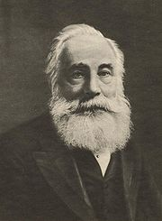
威廉•亨利•珀金（亦译柏琴），英国有机化学家，1838年 3月12日生于伦敦，1907年 7月14日卒于萨德伯里。1853年在皇家化学学院就学于德国有机化学家 A W von霍夫曼。珀金先后获得皇家化学学院、霍普金斯大学、牛津大学等许多大学的学位。1855—1857年，做霍夫曼的实验助手，同时在家里建立了自己的实验室。1866年珀金当选为英国皇家学会会员。1883年任英国化学会会长。
他在18岁发现了首个苯胺染料——苯胺紫。1853年15岁的珀金入读伦敦的皇家化学学院（现为伦敦帝国学院），成为奥古斯特•威廉•冯•霍夫曼的学生。在1856年的复活节，珀金在自己的实验室内进行有关奎宁的研究。他就在此时发现了苯胺紫。很快他便发现这种物质在光照和洗擦后都不易脱色，适合当染料。八月，他取得了专利权。当时的染料都很昂贵，制造过程劳动密集；在正值工业革命中的英国，这个新产品轻易成功了。以后，珀金继续进行有机化学研究，发现更多的人工染料。
另外，1858年珀金和合作者合成了甘氨酸；1861年合成了酒石酸。1867年他由芳醛类和脂肪酸酐，在碱的存在下合成了不饱和酸，此反应即“珀金反应”，或称“珀金合成法”。他对香料也进行过深入的研究，1868年首次由水杨醛和乙酸酐合成香豆素，这是最早的人工合成香料。1869年珀金取得独家工业生产合成茜素的专利。1874年，他家财万贯，卖掉工厂并退休。1906年，珀金奖章成立，以纪念发现苯胺紫五十周年。1889年获英国皇家学会戴维奖章。珀金主要著作有《实用化学教程》、《有机化学》、《无机化学》等。
奥斯瓦尔德
（F W Ostwald，1853—1932）
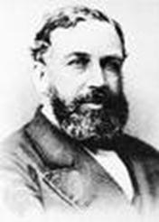
奥斯瓦尔德，德国物理化学家，1853年9月2日生于俄国拉脱维亚的里加（今拉脱维亚首都）。父亲开木桶作坊。他从小就对化学有特殊的兴趣，自己制作焰火和爆竹等。1875年毕业于多尔帕特大学，1878年获博士学位。1882年任里加工学院的化学教授。1887—1906年任莱比锡大学教授。1898年任电化学研究所所长。1906年辞职，隐居山村，主要从事写作。1932年4月4日在莱比锡逝世。
奥斯瓦尔德大力支持阿伦尼乌斯的电解质电离理论，并提出自己的稀释定律；用电离平衡理论解释了酸碱指示剂的变色机理；改进了物理化学方法和仪器；研究了酸的电导率、溶液的粘滞性、纯水的电离等；从多方面研究了催化过程，得出关于催化剂的现代观点；完成了使氨发生氧化，生成氧化氮的研究工作；创立了新的颜色理论。由于在催化研究、化学平衡和化学反应速率方面的卓越贡献，他获得了1909年诺贝尔化学奖。
奥斯瓦尔德一生共著书77种，三百多篇论文。主要著作有：《普通化学教科书》、《电化学》、《自然哲学年鉴》、《颜色学》、《生活的道路》等，还与范特霍夫一起创办了《物理化学杂志》。奥斯瓦尔德对哲学有浓厚的兴趣。对自然科学进行哲学概括，得出能是惟一实体，物质不过是能的表现形式的唯能论。这个观点使他否认原子和分子的客观性，因而遭到许多著名化学家的激烈批评。1908年，他终于承认了原子和分子的现实存在。
阿伦尼乌斯
（Svante August Arrhennius，1859—1927）
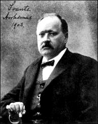
阿伦尼乌斯（亦译阿累尼乌斯），瑞典化学家，1859年2月19日生于瑞典乌普萨拉附近的维克城堡。17岁进入乌普萨拉大学，攻读数学、化学和物理学。1881年去斯德哥尔摩科学院物理研究所，当实验室助理员。1882年开始独立的物理化学研究。
1884年以《电解质的导电性研究》论文获斯德哥尔摩大学博士学位，同年成为乌普萨拉大学的物理化学副教授。1886—1888年访问德国、奥地利、荷兰，同奥斯瓦尔德和范特霍夫等到人一起工作过。1895年任斯德哥尔摩大学教授，1896—1902年为该校校长。1901年当选为瑞典科学院院士，还是许多外国科学院和学会的会员。从1905年起任斯德哥尔摩诺贝尔物理化学研究所所长。1927年10月2日在斯德哥尔摩逝世。
1887年，他提出关于电解质在水溶液中会部分解离成自由离子的电离理论，因而获得1903年诺贝尔化学奖。他研究过温度对化学反应速率的影响，得出著名的阿累尼乌斯公式。还提出了等氢离子现象理论、分子活化理论和盐的水解理论。对宇宙化学、天体物理学和生物化学等也有研究。
主要著作有：《电解质的离解热与温度对离解度的影响》、《电化学教科书》、《免疫化学》、《物理与宇宙化学问题》等。阿累尼乌斯的电离理论发表之后，遭到许多权威的反对，在国内也受到冷遇。他不屈不挠地坚持说理斗争，终身热爱祖国，热爱故乡。
札依采夫
（Alexander Mikhaylovich Zaytsev，1841—1910）

亚历山大•米哈伊洛维奇•札依采夫（亦译扎伊采夫，或查伊采夫），俄国化学家，生于喀山。札依采夫的父亲是一名经营糖与茶叶生意的商人，他原本希望他的儿子能子承父业，进入商业领域。然而在他的叔叔，物理学家李雅普诺夫劝说下，札依采夫被允许进入喀山大学学习经济学。当时俄罗斯实行官僚主义，法律和经济专业的大学生必须学习两年的化学。于是他开始跟随化学家亚历山大•米哈伊洛维奇•布特列洛夫学习。
布特列洛夫发现，札依采夫是一名很有天赋的实验化学家。1862年，札依采夫的父亲去世，他来到西欧继续他的化学研究。1862—1864年，他在马尔堡他师从化学家赫尔曼•科尔伯，扎依采夫发现了亚砜和三烃基锍盐。1864年，他来到巴黎，在武尔慈实验室工作一年，并于1864年回到马尔堡。此时，柯尔伯应邀前往莱比锡，而扎依采夫由于经济原因回到俄罗斯，担任布特列洛夫的助理。在此期间他完成了他的论文，获得了副博士学位。
为了获得教师职位，扎依采夫需要一个俄罗斯大学的硕士学位或一个国外大学的博士学位，于是他将他研究亚砜所取得的成果写成论文，邮寄至莱比锡大学，并于1866年获得了博士学位（这可能部分归功于柯尔伯的影响力）。获得博士学位后，布特列洛夫得以聘用他为农学助教。两年后，扎依采夫取得化学硕士学位。
1869年，扎依采夫成为特聘化学教授，与布特列洛夫的另一个学生马尔科夫尼科夫（1838—1904）共事。1870年，扎依采夫提交了他的化学博士论文，文中他对马尔科夫尼科夫的一些观点持批评态度。同年他受聘为正式化学教授，马尔科夫尼科夫对此感到不满，并离开喀山大学前往敖德萨。扎依采夫继续在喀山大学任教直到他于1910年逝世。
在喀山大学，他的研究领域是有机化学与醇的合成。他的第一个此方面的成果由布特列洛夫于1863年发表，是关于用二甲基锌与光气合成叔丁醇。扎依采夫与他的学生瓦格纳（1849—1903）与雷福尔马茨基（1860—1934）改用碘代烷，将这一反应推广至合成其他醇。在1901年格氏反应被发现之前，这一反应是制备醇的最常见反应。
1875年，他提出了预测有机消除反应产物的“扎依采夫规则”，当时他的“敌人”马尔科夫尼科夫（他认为这一规则并不完全正确）正执掌莫斯科大学。由于这一发现，扎依采夫获得了许多荣誉：他当选为俄国科学院院士、基辅大学荣誉教授，并担任了两届俄国物理化学学会主席。
伍德沃德
（Robert Burns Woodward，1917—1979）
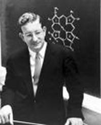
美国化学家。1917年4月10日生于波士顿，1979年7月8日卒于哈佛。1933年入麻省理工学院学习，1936年获理学士学位，1937年获哲学博士学位。1950—1960年，任哈佛大学教授。1963年瑞士汽巴公司为他在瑞士的巴塞尔建造了伍德沃德研究室，此后他在哈佛大学和巴塞尔两处指导研究工作。
伍德沃德主要从事于天然有机化合物的合成及有机化学理论工作。他在甾族化合物领域中的第一个成果，是描述了分子结构与紫外光谱间的关系；较早地认识到物理测定比化学反应更能阐明有机化合物分子结构的特点。他曾推测了许多复杂的天然有机化合物的结构，并取得了巨大的成功，包括青霉素（1945）、番木鳖碱（1947）和河豚毒素（1964）等。
在测定碳霉素的结构中，他发现了前所未知的一类天然产物——大环内酯抗生素，并提出了在自然界形成的可能途径。他也是第一个提出甾体激素的正确生物合成理论的人。他最早正确地推测了二茂铁的结构，为金属有机化学开辟了新的道路。他的合成工作突出地表现在巧妙地利用有机反应进行现在已知的最复杂的天然有机化合物的合成。
例如，1944年合成奎宁，1954年合成番木鳖碱，1956年合成利血平，其他还有胆甾醇、叶绿素、维生素B12、红霉素等。他把有机合成的技巧提高到一个前所未有的水平。在维生素B12合成（1973）的长期过程中，他认识到有机反应的一个基本规律，从而1965年提出了分子轨道对称守恒原理，又称伍德沃德—霍夫曼规则。它不但解释了以前很多不理解的反应，并且推动了一大类基本有机反应的发展，成为有机化学中最重要的理论之一。
被称为“现代有机合成之父”的伍德沃德，1953年他被当选为美国科学院院士，1959年获英国皇家学会的戴维奖章，1965年因合成甾醇和叶绿素等有机化合物的贡献获诺贝尔化学奖。1981年，霍夫曼与日本化学家福井谦一分享了当年的诺贝尔化学奖——当时倘若伍德沃德还活着，他毫无疑问可以拿第二次诺贝尔化学奖。
R • 霍夫曼
（Roald Hoffmann，1937—）
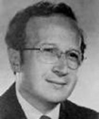
美国物理学家和化学家。1937年 7月18日生于波兰兹沃切夫。1949年随家移居美国，1955年入美国国籍。1958年获哥伦比亚大学文学士学位。1960年在哈佛大学获物理学硕士学位，1962年获化学物理学博士学位。1962—1965年，在哈佛大学工作。1965年任康奈尔大学副教授，1968年任化学教授，现任该校化学系主任。他是美国科学院院士。
霍夫曼主要从事量子化学方面的研究。他在哈佛大学工作期间,和有机化学家R. B. 伍德沃德合作，进行维生素B12的合成研究。维生素B12的结构极为复杂，其合成工作是一项巨大的工程。霍夫曼应用自己在量子化学方面的丰富知识，从分子轨道的各个方面对他们观察到的实验结果进行计算和研究，并以日本化学家福井谦一提出的前线轨道理论为工具，进行分析和讨论，终于在1965年提出了分子轨道对称守恒原理，又称伍德沃德—霍夫曼规则。
这个理论是从维生素的合成工作中总结出来的，它又指导了维生素的合成。它不仅阐明了一系列协同反应的机理和过程，而且在解释和预示一系列化学反应的方向、难易程度和产物的立体构型方面具有重要的指导作用，并把量子力学由静态发展到动态的阶段。这个理论被誉为“认识化学反应的发展道路上的一个里程碑”。
近几年来，霍夫曼主要从事基态及激发态分子的电子结构，特别是金属有机化合物电子结构的研究。霍夫曼因对分子轨道对称守恒原理的开创性研究，和福井谦一共获1981年诺贝尔化学奖。霍夫曼还曾多次获得美国化学会和国际量子分子科学会的嘉奖。斯德哥尔摩皇家理工学院、耶鲁大学和哥伦比亚大学还授予他荣誉博士学位。
福井谦一
（Fukui Kenichi，1918—1998）
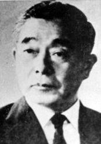
日本量子化学家。1918年10月4日生于奈良市。1961年毕业于京都大学工程学院。l943年任京都大学讲师，1948年获京都大学博士学位，1951年起任京都大学物理化学教授。1982年他还兼任京都技术学院院长、京都基础化学研究院理事等职。福井谦一获1981年诺贝尔化学奖。他还是美国科学院外籍院士，英国皇家学会会员。
福井谦一在化学上的主要贡献是：在他长期从事量子化学理论并对有机化合物的研究中，总结出著名的前线轨道理论。他指出化合物分子的许多性质主要由最高占据分子轨道和最低未占分子轨道所决定的。凡是处于前线轨道的电子，可优先配对。这对选择有机合成反应路线起决定性作用。1951年福井谦一提出这一理论时，并未引起人们的注意。
1959年伍德沃德和霍夫曼首先肯定这一理论的价值，并用它来研究周环反应的立体化学选择定则，进一步把它发展成为分子轨道对称守恒原理。这些发现不仅解释了以前化学反应中的一些不能解释的现象，而且能预测许多化学反应是否能进行。维生素B12的合成就是在前线轨道理论和分子轨道对称守恒原理指导下极成功的例子。
福井谦一是第一位获得诺贝尔化学奖的日籍科学家，同时也是亚洲第一位诺贝尔化学奖得主。